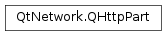

QHttpPart¶
Note
This class was introduced in Qt 5.9.
Synopsis¶
Functions¶
- def
__eq__(other) - def
__ne__(other) - def
setBody(body) - def
setBodyDevice(device) - def
setHeader(header, value) - def
setRawHeader(headerName, headerValue) - def
swap(other)
Detailed Description¶
The
PySide2.QtNetwork.QHttpPartclass holds a body part to be used inside a HTTP multipart MIME message.The
PySide2.QtNetwork.QHttpPartclass holds a body part to be used inside a HTTP multipart MIME message (which is represented by thePySide2.QtNetwork.QHttpMultiPartclass). APySide2.QtNetwork.QHttpPartconsists of a header block and a data block, which are separated by each other by two consecutive new lines. An example for one part would be:Content-Type: text/plain Content-Disposition: form-data; name="text" here goes the bodyFor setting headers, use
PySide2.QtNetwork.QHttpPart.setHeader()andPySide2.QtNetwork.QHttpPart.setRawHeader(), which behave exactly likeQNetworkRequest.setHeader()andQNetworkRequest.setRawHeader().For reading small pieces of data, use
PySide2.QtNetwork.QHttpPart.setBody(); for larger data blocks like e.g. images, usePySide2.QtNetwork.QHttpPart.setBodyDevice(). The latter method saves memory by not copying the data internally, but reading directly from the device. This means that the device must be opened and readable at the moment when the multipart message containing the body part is sent on the network viaQNetworkAccessManager.post().To construct a
PySide2.QtNetwork.QHttpPartwith a small body, consider the following snippet (this produces the data shown in the example above):QHttpPart textPart; textPart.setHeader(QNetworkRequest::ContentTypeHeader, QVariant("text/plain")); textPart.setHeader(QNetworkRequest::ContentDispositionHeader, QVariant("form-data; name=\"text\"")); textPart.setBody("here goes the body");To construct a
PySide2.QtNetwork.QHttpPartreading from a device (e.g. a file), the following can be applied:QHttpPart imagePart; imagePart.setHeader(QNetworkRequest::ContentTypeHeader, QVariant("image/jpeg")); imagePart.setHeader(QNetworkRequest::ContentDispositionHeader, QVariant("form-data; name=\"image\"")); imagePart.setRawHeader("Content-ID", "my@content.id"); // add any headers you like via setRawHeader() QFile *file = new QFile("image.jpg"); file->open(QIODevice::ReadOnly); imagePart.setBodyDevice(file);Be aware that
PySide2.QtNetwork.QHttpPartdoes not take ownership of the device when set, so it is the developer’s responsibility to destroy it when it is not needed anymore. A good idea might be to set the multipart message as parent object for the device, as documented at the documentation forPySide2.QtNetwork.QHttpMultiPart.
-
class
PySide2.QtNetwork.QHttpPart¶ -
class
PySide2.QtNetwork.QHttpPart(other) Parameters: other – PySide2.QtNetwork.QHttpPartConstructs an empty
PySide2.QtNetwork.QHttpPartobject.Creates a copy of
other.
-
PySide2.QtNetwork.QHttpPart.__ne__(other)¶ Parameters: other – PySide2.QtNetwork.QHttpPartReturn type: PySide2.QtCore.boolReturns
trueif this object is not the same asother.See also
PySide2.QtNetwork.QHttpPart.operator==()
-
PySide2.QtNetwork.QHttpPart.__eq__(other)¶ Parameters: other – PySide2.QtNetwork.QHttpPartReturn type: PySide2.QtCore.boolReturns
trueif this object is the same asother(i.e., if they have the same headers and body).See also
PySide2.QtNetwork.QHttpPart.operator!=()
-
PySide2.QtNetwork.QHttpPart.setBody(body)¶ Parameters: body – PySide2.QtCore.QByteArraySets the body of this MIME part to
body. The body set with this method will be used unless the device is set viaPySide2.QtNetwork.QHttpPart.setBodyDevice(). For a large amount of data (e.g. an image), usePySide2.QtNetwork.QHttpPart.setBodyDevice(), which will not copy the data internally.
-
PySide2.QtNetwork.QHttpPart.setBodyDevice(device)¶ Parameters: device – PySide2.QtCore.QIODeviceSets the device to read the content from to
device. For large amounts of data this method should be preferred overPySide2.QtNetwork.QHttpPart.setBody(), because the content is not copied when using this method, but read directly from the device.devicemust be open and readable.PySide2.QtNetwork.QHttpPartdoes not take ownership ofdevice, i.e. the device must be closed and destroyed if necessary. ifdeviceis sequential (e.g. sockets, but not files),QNetworkAccessManager.post()should be called afterdevicehas emitted finished(). For unsetting the device and using data set viaPySide2.QtNetwork.QHttpPart.setBody(), use “(0)”.
-
PySide2.QtNetwork.QHttpPart.setHeader(header, value)¶ Parameters: - header –
PySide2.QtNetwork.QNetworkRequest.KnownHeaders - value – object
Sets the value of the known header
headerto bevalue, overriding any previously set headers.See also
QNetworkRequest.KnownHeadersPySide2.QtNetwork.QHttpPart.setRawHeader()QNetworkRequest.setHeader()- header –
-
PySide2.QtNetwork.QHttpPart.setRawHeader(headerName, headerValue)¶ Parameters: - headerName –
PySide2.QtCore.QByteArray - headerValue –
PySide2.QtCore.QByteArray
Sets the header
headerNameto be of valueheaderValue. IfheaderNamecorresponds to a known header (seeQNetworkRequest.KnownHeaders), the raw format will be parsed and the corresponding “cooked” header will be set as well.Note
Setting the same header twice overrides the previous setting. To accomplish the behaviour of multiple HTTP headers of the same name, you should concatenate the two values, separating them with a comma (“,”) and set one single raw header.
See also
QNetworkRequest.KnownHeadersPySide2.QtNetwork.QHttpPart.setHeader()QNetworkRequest.setRawHeader()- headerName –
-
PySide2.QtNetwork.QHttpPart.swap(other)¶ Parameters: other – PySide2.QtNetwork.QHttpPartSwaps this HTTP part with
other. This function is very fast and never fails.
© 2018 The Qt Company Ltd. Documentation contributions included herein are the copyrights of their respective owners. The documentation provided herein is licensed under the terms of the GNU Free Documentation License version 1.3 as published by the Free Software Foundation. Qt and respective logos are trademarks of The Qt Company Ltd. in Finland and/or other countries worldwide. All other trademarks are property of their respective owners.